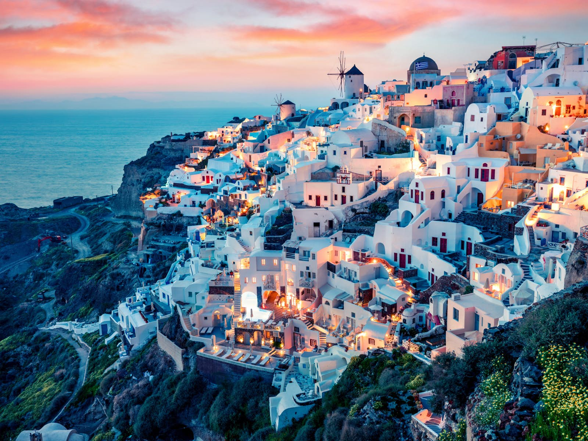

Home
Santorini, Greece

- Country: Greece
- Fun Fact: The name Thera was revived in the 19th century as the official name of the island
and its main city, but the colloquial name Santorini is still in popular use.
- Description: Santorini, officially Thira and classic Greek Thera, is an island in the southern
Aegean Sea, about 200 km (120 mi) southeast of Greece's mainland. It is the largest island of
a small, circular archipelago, which bears the same name and is the remnant of a volcanic
caldera. It forms the southernmost member of the Cyclades group of islands, with an area of
approximately 73 km2 (28 sq mi) and a 2011 census population of 15,550. The municipality of
Santorini includes the inhabited islands of Santorini and Therasia, as well as the uninhabited
islands of Nea Kameni, Palaia Kameni, Aspronisi and Christiana. The total land area is
90.623 km^2 (34.990 sq mi).[2] Santorini is part of the Thira regional unit.[3]